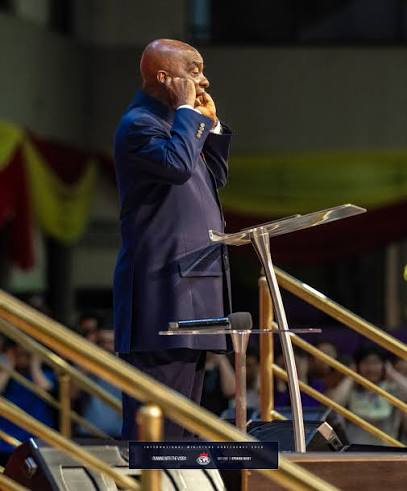

Une Vision de 18 Heures
Du 1er au 2 Mai 1981, un jeune homme se retira pour chercher la face de Dieu. Au cours de cette retraite, le Seigneur lui accorda une vision panoramique de l'humanité opprimée, brisée et en larmes. C'était une vision qui dura 18 heures ininterrompues.
Face à cette agonie humaine, l'Évêque David Oyedepo fondit en larmes, demandant au Seigneur pourquoi il y avait tant de souffrances. Dieu lui répondit de manière auditive et précise, lui confiant une responsabilité écrasante : celle d'apporter le remède à une génération mourante. C'est ainsi que naquit le Mandat de Libération.

« L'heure est venue de libérer le monde de toutes les oppressions du diable par la prédication de la parole de foi, et je t'envoie pour accomplir cette tâche. »
La Voix de l'Éternel (Mai 1981)
L'Incarnation à Calavi
La Continuité de l'Alliance
L'Église du Festival de la Foi Vivante (EFFV), sous la direction du Pasteur Eugène Megni, opère sous l'onction directe de cette alliance de mai 1981. Ce n'est pas une simple église, c'est un centre de libération. Chaque enseignement, chaque culte et chaque cellule de prière est conçu pour briser les jougs de la maladie, de la pauvreté et de l'ignorance.
Foi & Intellect
En tant que Professeur d'Université, le Pasteur Megni incarne la dimension intellectuelle de ce mandat : démontrer que la Parole de Foi ne s'oppose pas à l'excellence académique ou professionnelle, mais qu'au contraire, elle en est le moteur souverain. L'EFFV équipe les hommes pour régner spirituellement et impacter la société béninoise.
Les Outils de Notre Victoire
La Parole de Foi
L'instrument principal de la libération. Ce n'est ni par la force, ni par la psychologie, mais par la prédication audacieuse et révélée de la Parole de Dieu.
Le Nom de Jésus
La clé maîtresse qui ouvre toutes les portes et brise toutes les chaînes. Le mandat s'exécute exclusivement par l'autorité investie dans ce Nom sacré.
Le Saint-Esprit
Le pouvoir exécutif du Mandat. C'est l'Esprit de Dieu qui valide, confirme et manifeste chaque déclaration de foi par des miracles évidents.
Rejoignez le Mouvement de Libération
Votre heure de gloire, de restauration et de victoire absolue est arrivée.
Participer à notre culte